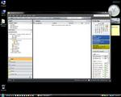
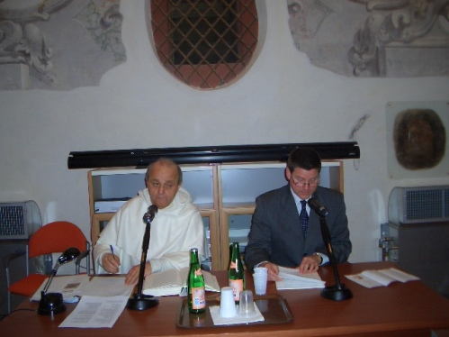

This fine book, and its methodology, have been a god-send to me. It’s inexpensive, and could make your life a whole lot easier.
Literal Sense of Scripture article from 1992 is on-line
Back in 1992 I published an article with a then-fledgling journal out of Notre Dame: “Another Look at St. Thomas and the Plurality of the Literal Sense of Scripture,” Medieval Philosophy and Theology 2 (1992): 117-141. The article was derived from my License Thesis at the Pontifical Institute of Mediaeval Studies in Toronto, which I finished in 1988. The article was well-received by some leaders in Thomistic scholarship (i.e., specifically, Fr. Jean-Pierre Torrell), and elsewhere (e.g., Lewis Ayres noted it in his article in Theological Studies). But because Medieval Philosophy and Theology has not been as widely-distributed as other journals are, it has been difficult to find the article.
This situation has changed, now that Medieval Philosophy and Theology has gone to publishing only on-line, for its website now has all the back-articles it has published on-line, too. You can therefore download this 1992 article in PDF format. Note, however, that because the PDF was created from a scan of the original, published journal, the PDF file is an image, and is big (2.28 MB).
The site has a fine search function, which allows searches in the title, author, abstract, ‘all fields,’ and even full-text. It seems to be a highly useful site, and I look forward to a successful future for the journal.
Phew. Finally back to zero
It’s been a terribly busy first semester here at Marquette University, and I’m only just getting out from under the pile—just in time for the second semester. Yeesh.
That said, there’s nothing like sitting down on a Saturday morning and slogging through all the e-mail items in your Inbox. My new e-mail rule: only touch an e-mail message once.. When you open it, decide right then and there what to do. Delete it, if you don’t need it. Stash it into a non-Inbox folder for further reference, if that’s a help. Or drag it to the task button in Outlook to set up a task based upon it. Or haul it onto the Calendar bar and create an appointment. But always remember that your Inbox is only the landing-strip for incoming e-mail; it is not the hanger. Get everything to its appropriate hanger.
{kind=link}
I did all that this morning, and the picture here shows you what the pot of gold at the end of the rainbow is.
“General Introduction” in forthcoming book on Aquinas and the Mendicant Controversies
A little over a year ago I was contacted by the editors at Alethes Press, a publishing house dedicated to publishing a wide range of primary source materials of interest to scholars. They were going to publish hard-to-find translations of three of Aquinas’s works regarding the “mendicant controversies” that raged at the University of Paris during his two stints there—indeed, it is likely that Thomas was sent to Paris a second time precisely to help out the Dominican cause as the controversy against his order raged.
{kind=link}
The editors invited me to put together a new general introduction for the whole volume, and for each of the three works, which I was happy to do. The volume will be appearing shortly (we’re at the proofs stage). You never see Thomas more passionate—or more angry—than when he is defending his Dominican Order. Here is more about the volume (taken from the Alethes Press site):
Originally published separately as An Apology for the Religious Orders (1902) and The Religious State, the Episcopate, and the Priestly Office (1902), this book presents—for the first time in one volume and in correct historical order—the rare English translations of three key works by Aquinas, who found himself over a fifteen-year period (1256-1271) forced at the University of Paris to defend the fledgling mendicant orders, his own Dominicans and the Franciscans, against the attacks of the established secular or diocesan clergy. The significance of these debates, and Aquinas’s participation in them, to the history of western Christendom cannot be overestimated. The sanctity and freedom of the individual person and the social rights and duties of religion, ideas polished by the deft hands of Aquinas, shine in these discourses, which figure prominently, among other places, in modern papal social teaching.
Complete with a new informative introduction and comprehensive new index, this title is required reading in philosophy, political theory, theology, and medieval and church history—and thus belongs in every academic, research, and scholar’s library.
This volume comprises the following texts:
- “Against those who attack the religious profession”(Contra impugnantes dei cultum et religionem, 1256).
- “The Perfection of the Spiritual Life” (De perfectione spiritualis vitae, 1269-1270).
- “Against those who would deter men from entering religion” (Contra doctrinam retrahentium a religione, 1271-1272).
If you’re interested in getting a copy you can advance –order, along with a discount code (the code is: VE0612A), which will get you 53% off the cover price, until January 15, 2007.
Update on Friday, January 19, 2007 at 10:12AM by
Mark Johnson
The publishers have extended the discount deadline until January 31, 2007 (and this has been modified in the article, too).
Run, Possum, run!
Riddle: "Why did the chicken cross the road?"
Answer: "To show the possum that it could be done."
It has been unusually warm here in New Berlin, Wisconsin, the past few days, warm enough, in fact, completely to melt a hefty snow we got ten days ago. So yesterday morning I opened the window-blinds in on one side of the house and saw to my surprise a possum walking alongside my house. Perhaps the melt made it attractive for the possum to forage for food in the early morning's light—btw, that's probably the only time one is likely to see the words "attractive" and "possum" in the same sentence; is their visage not proof that God has a sense of humor, or a mean streak? Anyway, this bulky possum waddled towards the front of my house. I went and got my son, eager to show him the thing, and brought him to the front window of our house, which faces the street. The possum came into view from the side of the house, crossed our front lawn, and lumbered towards the street.
"See that, son? That's a possum. It looks like an overgrown rat. Oh, he's going to cross the street." The possum took one, two, three steps onto the street.
At that very moment a car—I do not lie—came tearing around a curve in the street, going faster than cars usually do in the morning. The possum—whom God neither gifted with intelligence—decided that the twenty-or-so steps to cross the street was safer than the three or four it would take to come back to our side. He bolted. "Oh, no! Run, possum, run!"
S-C-R-E-E-C-H!
The car halted, just missing the possum's tail, as it darted under the bushes by the house across the street. The driver of the car was terrified, then furious. After a moment, he started forward.
For my part, I was relieved. After all, my son was not traumatized by witnessing car-versus-animal-Darwinism. And my to-do list is plenty long enough; I needed the job of scooping up the entrails of a possum like a hole in head.
Paul of Hungary article published
It took a while for it to get edited and published, but my article on the Summa de penitentia, attributed to Paul of Hungary, has appeared in the Bologna-based Divus Thomas:
- “La «Summa de poenitentia» attribuita a Paolo Ungaro,” Divus Thomas 109/2 (2006): 136-145.
The article is more-or-less the text I read last year at a conference in Bologna (February 18-20, 2005), on the origins of the Dominican Order at the University of Bologna in the early 1200’s. I had been invited through the good graces of Fr Giovanni Bertuzzi, OP, and with the wonderful hospitality of Elisabetta Molé (who tidied up the Italian in my paper), I spent a memorable weekend in the church where the Order worshipped in Bologna, where St. Dominic himself is buried, and which St. Thomas himself doubtless visited. Pictures I took of that weekend are over on Thomistica.net.
Elisabetta Molé sent over a picture taken as I read my paper, with Fr Bertuzzi to my right. He doesn’t seem to be enjoying what I’m saying; what’s Italian for “totally bored”?
